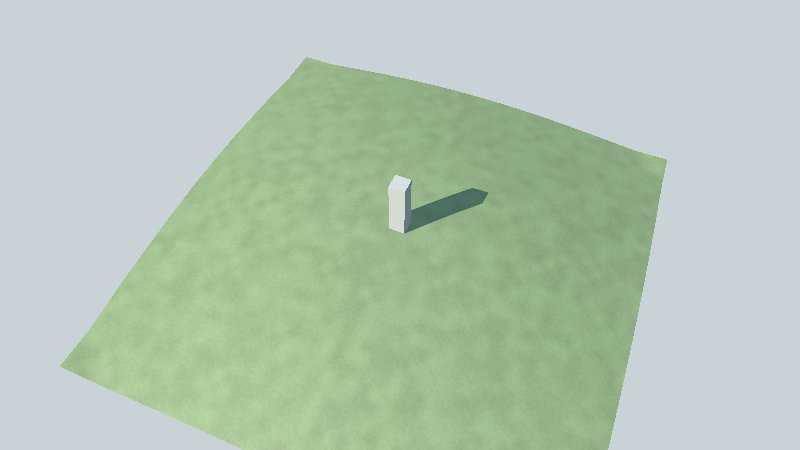

This page takes you from nothing to a window showing a 3D scene you built in Go, in about fifteen minutes. You need to know a little Go (packages, functions, structs); you need no graphics experience.
What you will do
⚠️ Go Renderer is an educational project, not a finished product: its API still changes from one week to the next. Pin the commit you build against.
| You need | Why | How |
|---|---|---|
| Go 1.25 or later | The language | go.dev/dl, then go version |
| A C compiler | The window (GLFW) and OpenGL are reached through cgo | Linux: gcc; macOS: xcode-select --install; Windows: MinGW-w64 on the PATH |
| OpenGL 4.1 and its headers | What draws on Linux and Windows (macOS draws through Metal) | Linux (Debian, Ubuntu): sudo apt install libgl1-mesa-dev xorg-dev libwayland-dev libxkbcommon-dev; Fedora: sudo dnf install mesa-libGL-devel libXcursor-devel libXrandr-devel libXinerama-devel libXi-devel libXxf86vm-devel wayland-devel libxkbcommon-devel |
Check cgo is on: go env CGO_ENABLED should print 1.
Go Renderer is not published as versioned modules yet. Clone it into a folder that will hold your own programs too; later on, Go UI and Go UI for Android go beside it.
mkdir workspace && cd workspace
git clone https://github.com/akrck02/go-renderer
cd go-renderer
go run ./cmd/visor -sample island
A window opens on a small made-up island. Drag with the left button to turn around it, scroll to
come closer, press Tab to walk on it and N to jump to the night. Every control is in
the viewer’s page.
💡 No display? On a server or in a container,
-capture island.pngdraws one frame into a picture instead, andxvfb-run go run ./cmd/visor -sample island -capture island.pnggives it a screen to draw on.
Make a module beside Go Renderer, and point it at your copy:
cd .. && mkdir first-scene && cd first-scene
go mod init example.com/first-scene
go mod edit -require github.com/akrck02/go-renderer@v0.0.0 -replace github.com/akrck02/go-renderer=../go-renderer
Write main.go:
package main
import (
"log"
"github.com/akrck02/go-renderer/graphics"
"github.com/akrck02/go-renderer/scene"
"github.com/akrck02/go-renderer/viewer"
)
func main() {
world := scene.New() // an empty scene with a sun and a sky
ground := &scene.Mesh{
Positions: []float32{-20, 0, -20, 20, 0, -20, 20, 0, 20, -20, 0, 20}, // x, y, z of four corners
Indices: []uint32{0, 2, 1, 0, 3, 2}, // two triangles
Material: &scene.Material{Kind: scene.KindLit, BaseColor: graphics.Vec4{0.3, 0.6, 0.25, 1}},
Ground: true, // the walker can stand on it
}
ground.ComputeNormals()
world.Nodes = append(world.Nodes, &scene.Node{Name: "ground", Transform: graphics.Identity(), Mesh: ground})
if err := viewer.Run(world, viewer.DefaultOptions(), "First scene", nil, 0); err != nil {
log.Fatal(err)
}
}
go mod tidy
go run .
A green square in the sunlight: that is a scene. Three ideas carry everything else in Go Renderer:
scene.Scene holds what there is to draw: nodes placed in the world, each with a
mesh (triangles) and a material (how its surface is shaded), and an environment (sun,
sky, fog, water).viewer.Run opens the window, gives you cameras and draws until the window closes.
| If you want to… | Read |
|---|---|
| Learn step by step, building an island with a lighthouse, a forest, the sea and labels | The tutorial |
| Understand how it fits together | Architecture |
| Look up a type or a function | The reference |
| Put buttons and panels over your scene | Go UI |
| Open a scene made in Blender or Go Scene Builder | Lesson 6: scenes from files |